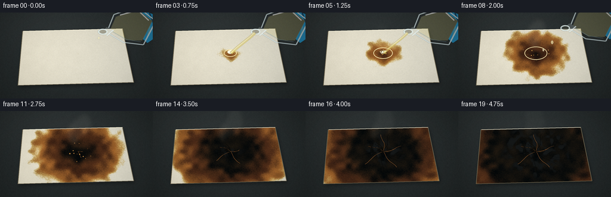
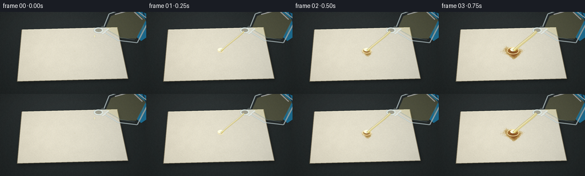

CODING AGENTS AS PIXEL WORLD MODELS
traex/GPT-5.6-Sol · phygen_153
点击播放 · 原生 RGB 像素
逐轮保存的候选
回放视频、检查图与代码变化。
每份候选均可单独播放。实际图片检查记录在下方工具轨迹中。
候选 01播放与检查图
点击播放 · 原生 RGB 像素

展开代码变化
--- 上一保存版本
+++ 本次保存版本
@@ -0,0 +1,238 @@
+from pathlib import Path
+import math
+import numpy as np
+from PIL import Image, ImageDraw, ImageFilter
+import artifact_io
+
+W,H,N,S = 256,144,20,4
+WW,HH=W*S,H*S
+rng=np.random.default_rng(153)
+
+def noise_field(h,w,gh,gw,seed,blur=0):
+ rr=np.random.default_rng(seed)
+ a=rr.normal(0,1,(gh,gw))
+ lo,hi=np.percentile(a,[2,98]); a=np.clip((a-lo)/(hi-lo),0,1)
+ im=Image.fromarray(np.uint8(a*255)).resize((w,h),Image.Resampling.BICUBIC)
+ if blur: im=im.filter(ImageFilter.GaussianBlur(blur))
+ return np.asarray(im,dtype=np.float32)/255
+
+def smoothstep(a,b,x):
+ z=np.clip((x-a)/(b-a),0,1)
+ return z*z*(3-2*z)
+
+def scpoly(draw, pts, **kw): draw.polygon([(int(x*S),int(y*S)) for x,y in pts],**kw)
+def scl(draw, pts, **kw): draw.line([(int(x*S),int(y*S)) for x,y in pts],**kw)
+def sce(draw, box, **kw): draw.ellipse(tuple(int(v*S) for v in box),**kw)
+
+# coordinates and stable texture fields
+yy,xx=np.mgrid[0:HH,0:WW]; X=xx/S; Y=yy/S
+large=noise_field(HH,WW,18,30,37,2*S)
+fine=noise_field(HH,WW,120,210,41,0)
+hole_noise=noise_field(HH,WW,25,45,85,1*S)
+smoke_noise=noise_field(HH,WW,16,24,92,2*S)
+
+# paper polygon and mask
+paper_pts=[(38,31),(205,27),(224,117),(30,122)]
+pm=Image.new('L',(WW,HH)); scpoly(ImageDraw.Draw(pm),paper_pts,fill=255)
+paper_mask=np.asarray(pm,dtype=np.float32)/255
+
+# Reaction arrival-time field: irregular radial spread plus several capillary/rivulet paths.
+d=np.sqrt(((X-130)/1.04)**2+((Y-68)/0.78)**2)
+arrival=0.055 + d/128*.88 + (large-.5)*.16
+
+def segment_arrival(x0,y0,x1,y1,start,duration,width):
+ vx=x1-x0; vy=y1-y0
+ q=np.clip(((X-x0)*vx+(Y-y0)*vy)/(vx*vx+vy*vy),0,1)
+ px=x0+q*vx; py=y0+q*vy
+ dist=np.sqrt((X-px)**2+(Y-py)**2)
+ return start+duration*q+dist/width
+for args in [(130,68,99,110,.07,.54,29),(130,68,169,108,.08,.58,27),
+ (130,68,86,58,.1,.55,25),(130,68,147,39,.11,.48,22),
+ (130,68,191,72,.13,.62,25),(130,68,54,91,.17,.68,24)]:
+ arrival=np.minimum(arrival,segment_arrival(*args))
+# Preserve irregularity at boundaries
+arrival += (fine-.5)*.025
+
+# lab-tray background, spatially coherent across frames
+base=np.zeros((HH,WW,3),dtype=np.float32)
+rad=np.sqrt(((X-128)/190)**2+((Y-67)/135)**2)
+brush=(fine-.5)*5 + np.sin(Y*2.7)*0.7
+base[...,0]=43-rad*11+brush
+base[...,1]=49-rad*12+brush
+base[...,2]=50-rad*13+brush
+# subtle cool overhead reflection
+base += (8*np.exp(-((X-78)**2/(2*85**2)+(Y-12)**2/(2*35**2))))[...,None]
+base=np.clip(base,0,255)
+
+# fixed paper shadow
+shadow=pm.filter(ImageFilter.GaussianBlur(3*S))
+shadow_arr=np.asarray(shadow,dtype=np.float32)/255
+shadow_arr=np.roll(np.roll(shadow_arr,3*S,axis=0),2*S,axis=1)
+
+# fiber texture and warm paper shading
+fiber=(fine-.5)*7 + (large-.5)*4 + np.sin(Y*13.2)*0.55
+paper_rgb=np.empty_like(base)
+paper_rgb[...,0]=225+fiber-0.055*(X-110)
+paper_rgb[...,1]=220+fiber-0.04*(X-110)
+paper_rgb[...,2]=201+fiber-0.015*(X-110)
+# upper-left illumination
+paper_rgb += (5*np.exp(-((X-78)**2+(Y-42)**2)/6000))[...,None]
+
+# crack paths (stable, gradually exposed)
+cracks=[]
+for k in range(21):
+ r=np.random.default_rng(900+k)
+ ang=2*math.pi*k/21+r.uniform(-.14,.14)
+ leng=r.uniform(18,61)
+ pts=[]
+ for j in range(9):
+ q=j/8
+ bend=4*math.sin(q*5+r.uniform(-.3,.3))*(q**.7)
+ pts.append((130+math.cos(ang)*leng*q+math.cos(ang+math.pi/2)*bend,
+ 68+math.sin(ang)*leng*.67*q+math.sin(ang+math.pi/2)*bend*.6))
+ cracks.append(pts)
+
+def add_tray_details(im):
+ dr=ImageDraw.Draw(im,'RGBA')
+ # raised stainless tray lips
+ dr.rectangle((0,0,WW,5*S),fill=(17,21,22,255))
+ dr.rectangle((0,5*S,WW,7*S),fill=(99,106,105,90))
+ dr.rectangle((0,137*S,WW,HH),fill=(20,23,24,255))
+ dr.line((0,136*S,WW,136*S),fill=(116,120,115,100),width=S)
+ dr.rectangle((0,0,7*S,HH),fill=(24,28,29,180))
+ # a few restrained scratches
+ for y,x0,x1 in [(18,18,91),(129,142,232),(12,154,223)]:
+ dr.line((x0*S,y*S,x1*S,y*S),fill=(160,166,161,18),width=1*S)
+
+def draw_smoke(im,f):
+ if f<5: return im
+ lay=Image.new('RGBA',(WW,HH),(0,0,0,0)); dr=ImageDraw.Draw(lay,'RGBA')
+ age=f-5
+ # three coherent wisps rise, broaden, and drift; they fade near the end.
+ overall=min(1,(f-4)/4)*max(.25,1-(f-14)/12)
+ for j in range(7):
+ phase=j*.85
+ cx=128 + math.sin(age*.42+phase)*7 + (j-3)*2.1
+ cy=59 - age*2.0 - j*4.2
+ rx=4+j*1.4+age*.35; ry=8+j*1.6+age*.28
+ alpha=int((25-j*2)*overall)
+ sce(dr,(cx-rx,cy-ry,cx+rx,cy+ry),fill=(229,226,207,alpha))
+ lay=lay.filter(ImageFilter.GaussianBlur(4*S))
+ return Image.alpha_composite(im.convert('RGBA'),lay)
+
+def draw_glass_and_pour(im,f):
+ if f>9: return im
+ # Vessel exits upward/right after pouring.
+ retreat=max(0,f-7)
+ ox=retreat*7; oy=-retreat*6
+ lay=Image.new('RGBA',(WW,HH),(0,0,0,0)); dr=ImageDraw.Draw(lay,'RGBA')
+ # blue nitrile-gloved fingers behind the flask
+ glove=[(231+ox,-8+oy),(262+ox,5+oy),(260+ox,42+oy),(247+ox,51+oy),(234+ox,40+oy),(240+ox,26+oy),(219+ox,15+oy)]
+ scpoly(dr,glove,fill=(31,119,160,245))
+ scl(dr,[(239+ox,3+oy),(251+ox,24+oy),(246+ox,43+oy)],fill=(92,184,207,150),width=2*S)
+ scl(dr,[(250+ox,0+oy),(258+ox,21+oy)],fill=(8,70,112,130),width=2*S)
+ # pale acid reservoir inside a tilted thick-walled flask/beaker
+ acid=[(194+ox,7+oy),(228+ox,-7+oy),(255+ox,14+oy),(238+ox,47+oy),(211+ox,46+oy),(184+ox,30+oy)]
+ scpoly(dr,acid,fill=(218,207,128,62))
+ # glass body, rim and reflections
+ body=[(191+ox,3+oy),(230+ox,-10+oy),(261+ox,14+oy),(240+ox,54+oy),(207+ox,50+oy),(179+ox,33+oy)]
+ scl(dr,body+[body[0]],fill=(214,232,234,175),width=2*S)
+ scl(dr,[(201+ox,4+oy),(231+ox,-4+oy),(249+ox,13+oy)],fill=(255,255,255,155),width=2*S)
+ scl(dr,[(236+ox,49+oy),(211+ox,45+oy),(187+ox,31+oy)],fill=(137,165,169,130),width=1*S)
+ # narrow neck and open lip
+ scpoly(dr,[(179+ox,24+oy),(191+ox,30+oy),(179+ox,39+oy),(168+ox,33+oy)],fill=(216,232,230,58))
+ scl(dr,[(190+ox,29+oy),(179+ox,39+oy)],fill=(238,249,247,190),width=2*S)
+ sce(dr,(164+ox,27+oy,180+ox,37+oy),fill=(157,180,178,90),outline=(230,244,241,220),width=2*S)
+ sce(dr,(167+ox,29+oy,178+ox,35+oy),fill=(75,77,62,100))
+ # stream or drops. A luminous edge makes transparent acid legible.
+ if 1<=f<=6:
+ width={1:3.2,2:4.2,3:5.0,4:5.2,5:4.3,6:3.0}[f]
+ pts=[(171+ox,34+oy),(161+ox*.35,43),(151,51),(141,59),(131,68)]
+ scl(dr,pts,fill=(218,199,101,150),width=max(S,int(width*S)))
+ scl(dr,[(170+ox,34+oy),(160,43),(150,51),(140,59),(130,68)],fill=(255,249,206,125),width=S)
+ elif f in (0,7,8):
+ drops=[(164+ox,40+oy,167+ox,45+oy)] if f==0 else [(154+ox*.2,48+oy*.2,158+ox*.2,54+oy*.2),(141,60,144,65)]
+ for b in drops: sce(dr,b,fill=(237,224,153,170),outline=(255,252,220,180),width=S)
+ lay=lay.filter(ImageFilter.GaussianBlur(.18*S))
+ return Image.alpha_composite(im.convert('RGBA'),lay)
+
+frames=[]
+for f in range(N):
+ arr=base.copy()
+ # paper shadow and body
+ arr *= (1-.34*shadow_arr[...,None])
+ arr=arr*(1-paper_mask[...,None])+paper_rgb*paper_mask[...,None]
+
+ # Acid chemistry from clear wetness through dehydration, carbonization and brittle black char.
+ u=max(0,(f-.65)/18.0)
+ age=u-arrival
+ reacted=smoothstep(-.018,.035,age)*paper_mask
+ # continuous chemistry color stages
+ t1=smoothstep(-.005,.09,age)
+ t2=smoothstep(.075,.25,age)
+ t3=smoothstep(.23,.48,age)
+ wet=np.stack([np.full_like(X,205),np.full_like(X,176),np.full_like(X,105)],axis=-1)
+ och=np.stack([np.full_like(X,153),np.full_like(X,96),np.full_like(X,43)],axis=-1)
+ bro=np.stack([np.full_like(X,76),np.full_like(X,43),np.full_like(X,24)],axis=-1)
+ blk=np.stack([np.full_like(X,17),np.full_like(X,16),np.full_like(X,13)],axis=-1)
+ chem=wet*(1-t1[...,None])+och*t1[...,None]
+ chem=chem*(1-t2[...,None])+bro*t2[...,None]
+ chem=chem*(1-t3[...,None])+blk*t3[...,None]
+ # mottled granular carbon and brighter caramel at active front
+ mott=(large-.5)*28+(fine-.5)*10
+ chem += mott[...,None]*np.stack([np.ones_like(X),.62*np.ones_like(X),.28*np.ones_like(X)],axis=-1)
+ arr=arr*(1-reacted[...,None])+chem*reacted[...,None]
+
+ # Central brittle perforations at late times, revealing the dark tray below.
+ if f>=14:
+ hole=smoothstep(.53,.73,age)*smoothstep(.50,.70,hole_noise)*paper_mask
+ tray=base*.48
+ arr=arr*(1-hole[...,None])+tray*hole[...,None]
+
+ im=Image.fromarray(np.uint8(np.clip(arr,0,255)),'RGB').convert('RGBA')
+ dr=ImageDraw.Draw(im,'RGBA')
+ # sheet outline, thin and tangible
+ scl(dr,paper_pts+[paper_pts[0]],fill=(115,106,83,170),width=S)
+ scl(dr,[(39,31),(205,27)],fill=(255,250,224,135),width=S)
+
+ # clear fresh acid puddle speculars and impact ripples
+ if 1<=f<=8:
+ q=min(1,(f-1)/5); rx=5+q*14; ry=3+q*8
+ sce(dr,(130-rx,68-ry,130+rx,68+ry),outline=(255,240,183,105),width=S)
+ if f<=6:
+ sce(dr,(125,63,135,69),fill=(255,255,225,65))
+ scl(dr,[(126,65),(131,63),(136,65)],fill=(255,255,235,155),width=S)
+
+ # Radial cracks appear only where carbonization has had time to progress.
+ if f>=10:
+ reveal=np.clip((f-9)/7,0,1)
+ ncr=int(4+reveal*17)
+ for k,pts in enumerate(cracks[:ncr]):
+ # progressively lengthen each crack
+ upto=max(2,int(2+reveal*7))
+ scl(dr,pts[:upto],fill=(6,7,6,int(90+90*reveal)),width=max(1,S//2))
+ if k%4==0:
+ off=[(x+.7,y-.5) for x,y in pts[:upto]]
+ scl(dr,off,fill=(154,96,48,60),width=max(1,S//2))
+
+ # tiny bubbles at the hot caramel/brown phase
+ if 5<=f<=13:
+ br=np.random.default_rng(300+f//2)
+ for j in range(12):
+ a=br.uniform(0,2*math.pi); rr=br.uniform(6,30)*min(1,(f-3)/6)
+ x=130+math.cos(a)*rr; y=68+math.sin(a)*rr*.65
+ r=br.uniform(.5,1.3)
+ sce(dr,(x-r,y-r,x+r,y+r),fill=(232,179,91,65),outline=(63,36,18,110),width=max(1,S//2))
+
+ im=draw_smoke(im,f)
+ im=draw_glass_and_pour(im,f)
+ # restrained vignette and final downsample
+ rgb=np.asarray(im.convert('RGB'),dtype=np.float32)
+ vig=np.clip(1-.16*((X-128)/160)**2-.12*((Y-72)/105)**2,.76,1)
+ rgb*=vig[...,None]
+ out=Image.fromarray(np.uint8(np.clip(rgb,0,255))).resize((W,H),Image.Resampling.LANCZOS)
+ frames.append(np.asarray(out,dtype=np.uint8))
+
+frames=np.stack(frames)
+artifact_io.save(frames,Path(__file__).resolve().parent)
+print('saved',frames.shape,frames.dtype)
可观测工具轨迹
实际执行的命令与返回图片。
命令 1exit 0
/bin/bash -lc "cat prompt.txt && printf '\\n---RULES---\\n' && cat GENERATION_RULES.md && printf '\\n---SPEC---\\n' && cat task_spec.json"
命令 2exit 0
/bin/bash -lc "find . -maxdepth 2 -type f -printf '%p\\n' | sort"
命令 3exit 0
/bin/bash -lc 'cat artifact_io.py'
命令 4exit 0
/bin/bash -lc "cat > generate.py <<'PY'
from pathlib import Path
import math
import numpy as np
from PIL import Image, ImageDraw, ImageFilter
import artifact_io
W,H,N,S = 256,144,20,4
WW,HH=W*S,H*S
rng=np.random.default_rng(153)
def noise_field(h,w,gh,gw,seed,blur=0):
rr=np.random.default_rng(seed)
a=rr.normal(0,1,(gh,gw))
lo,hi=np.percentile(a,[2,98]); a=np.clip((a-lo)/(hi-lo),0,1)
im=Image.fromarray(np.uint8(a*255)).resize((w,h),Image.Resampling.BICUBIC)
if blur: im=im.filter(ImageFilter.GaussianBlur(blur))
return np.asarray(im,dtype=np.float32)/255
def smoothstep(a,b,x):
z=np.clip((x-a)/(b-a),0,1)
return z*z*(3-2*z)
def scpoly(draw, pts, **kw): draw.polygon([(int(x*S),int(y*S)) for x,y in pts],**kw)
def scl(draw, pts, **kw): draw.line([(int(x*S),int(y*S)) for x,y in pts],**kw)
def sce(draw, box, **kw): draw.ellipse(tuple(int(v*S) for v in box),**kw)
# coordinates and stable texture fields
yy,xx=np.mgrid[0:HH,0:WW]; X=xx/S; Y=yy/S
large=noise_field(HH,WW,18,30,37,2*S)
fine=noise_field(HH,WW,120,210,41,0)
hole_noise=noise_field(HH,WW,25,45,85,1*S)
smoke_noise=noise_field(HH,WW,16,24,92,2*S)
# paper polygon and mask
paper_pts=[(38,31),(205,27),(224,117),(30,122)]
pm=Image.new('L',(WW,HH)); scpoly(ImageDraw.Draw(pm),paper_pts,fill=255)
paper_mask=np.asarray(pm,dtype=np.float32)/255
# Reaction arrival-time field: irregular radial spread plus several capillary/rivulet paths.
d=np.sqrt(((X-130)/1.04)**2+((Y-68)/0.78)**2)
arrival=0.055 + d/128*.88 + (large-.5)*.16
def segment_arrival(x0,y0,x1,y1,start,duration,width):
vx=x1-x0; vy=y1-y0
q=np.clip(((X-x0)*vx+(Y-y0)*vy)/(vx*vx+vy*vy),0,1)
px=x0+q*vx; py=y0+q*vy
dist=np.sqrt((X-px)**2+(Y-py)**2)
return start+duration*q+dist/width
for args in [(130,68,99,110,.07,.54,29),(130,68,169,108,.08,.58,27),
(130,68,86,58,.1,.55,25),(130,68,147,39,.11,.48,22),
(130,68,191,72,.13,.62,25),(130,68,54,91,.17,.68,24)]:
arrival=np.minimum(arrival,segment_arrival(*args))
# Preserve irregularity at boundaries
arrival += (fine-.5)*.025
# lab-tray background, spatially coherent across frames
base=np.zeros((HH,WW,3),dtype=np.float32)
rad=np.sqrt(((X-128)/190)**2+((Y-67)/135)**2)
brush=(fine-.5)*5 + np.sin(Y*2.7)*0.7
base[...,0]=43-rad*11+brush
base[...,1]=49-rad*12+brush
base[...,2]=50-rad*13+brush
# subtle cool overhead reflection
base += (8*np.exp(-((X-78)**2/(2*85**2)+(Y-12)**2/(2*35**2))))[...,None]
base=np.clip(base,0,255)
# fixed paper shadow
shadow=pm.filter(ImageFilter.GaussianBlur(3*S))
shadow_arr=np.asarray(shadow,dtype=np.float32)/255
shadow_arr=np.roll(np.roll(shadow_arr,3*S,axis=0),2*S,axis=1)
# fiber texture and warm paper shading
fiber=(fine-.5)*7 + (large-.5)*4 + np.sin(Y*13.2)*0.55
paper_rgb=np.empty_like(base)
paper_rgb[...,0]=225+fiber-0.055*(X-110)
paper_rgb[...,1]=220+fiber-0.04*(X-110)
paper_rgb[...,2]=201+fiber-0.015*(X-110)
# upper-left illumination
paper_rgb += (5*np.exp(-((X-78)**2+(Y-42)**2)/6000))[...,None]
# crack paths (stable, gradually exposed)
cracks=[]
for k in range(21):
r=np.random.default_rng(900+k)
ang=2*math.pi*k/21+r.uniform(-.14,.14)
leng=r.uniform(18,61)
pts=[]
for j in range(9):
q=j/8
bend=4*math.sin(q*5+r.uniform(-.3,.3))*(q**.7)
pts.append((130+math.cos(ang)*leng*q+math.cos(ang+math.pi/2)*bend,
68+math.sin(ang)*leng*.67*q+math.sin(ang+math.pi/2)*bend*.6))
cracks.append(pts)
def add_tray_details(im):
dr=ImageDraw.Draw(im,'RGBA')
# raised stainless tray lips
dr.rectangle((0,0,WW,5*S),fill=(17,21,22,255))
dr.rectangle((0,5*S,WW,7*S),fill=(99,106,105,90))
dr.rectangle((0,137*S,WW,HH),fill=(20,23,24,255))
dr.line((0,136*S,WW,136*S),fill=(116,120,115,100),width=S)
dr.rectangle((0,0,7*S,HH),fill=(24,28,29,180))
# a few restrained scratches
for y,x0,x1 in [(18,18,91),(129,142,232),(12,154,223)]:
dr.line((x0*S,y*S,x1*S,y*S),fill=(160,166,161,18),width=1*S)
def draw_smoke(im,f):
if f<5: return im
lay=Image.new('RGBA',(WW,HH),(0,0,0,0)); dr=ImageDraw.Draw(lay,'RGBA')
age=f-5
# three coherent wisps rise, broaden, and drift; they fade near the end.
overall=min(1,(f-4)/4)*max(.25,1-(f-14)/12)
for j in range(7):
phase=j*.85
cx=128 + math.sin(age*.42+phase)*7 + (j-3)*2.1
cy=59 - age*2.0 - j*4.2
rx=4+j*1.4+age*.35; ry=8+j*1.6+age*.28
alpha=int((25-j*2)*overall)
sce(dr,(cx-rx,cy-ry,cx+rx,cy+ry),fill=(229,226,207,alpha))
lay=lay.filter(ImageFilter.GaussianBlur(4*S))
return Image.alpha_composite(im.convert('RGBA'),lay)
def draw_glass_and_pour(im,f):
if f>9: return im
# Vessel exits upward/right after pouring.
retreat=max(0,f-7)
ox=retreat*7; oy=-retreat*6
lay=Image.new('RGBA',(WW,HH),(0,0,0,0)); dr=ImageDraw.Draw(lay,'RGBA')
# blue nitrile-gloved fingers behind the flask
glove=[(231+ox,-8+oy),(262+ox,5+oy),(260+ox,42+oy),(247+ox,51+oy),(234+ox,40+oy),(240+ox,26+oy),(219+ox,15+oy)]
scpoly(dr,glove,fill=(31,119,160,245))
scl(dr,[(239+ox,3+oy),(251+ox,24+oy),(246+ox,43+oy)],fill=(92,184,207,150),width=2*S)
scl(dr,[(250+ox,0+oy),(258+ox,21+oy)],fill=(8,70,112,130),width=2*S)
# pale acid reservoir inside a tilted thick-walled flask/beaker
acid=[(194+ox,7+oy),(228+ox,-7+oy),(255+ox,14+oy),(238+ox,47+oy),(211+ox,46+oy),(184+ox,30+oy)]
scpoly(dr,acid,fill=(218,207,128,62))
# glass body, rim and reflections
body=[(191+ox,3+oy),(230+ox,-10+oy),(261+ox,14+oy),(240+ox,54+oy),(207+ox,50+oy),(179+ox,33+oy)]
scl(dr,body+[body[0]],fill=(214,232,234,175),width=2*S)
scl(dr,[(201+ox,4+oy),(231+ox,-4+oy),(249+ox,13+oy)],fill=(255,255,255,155),width=2*S)
scl(dr,[(236+ox,49+oy),(211+ox,45+oy),(187+ox,31+oy)],fill=(137,165,169,130),width=1*S)
# narrow neck and open lip
scpoly(dr,[(179+ox,24+oy),(191+ox,30+oy),(179+ox,39+oy),(168+ox,33+oy)],fill=(216,232,230,58))
scl(dr,[(190+ox,29+oy),(179+ox,39+oy)],fill=(238,249,247,190),width=2*S)
sce(dr,(164+ox,27+oy,180+ox,37+oy),fill=(157,180,178,90),outline=(230,244,241,220),width=2*S)
sce(dr,(167+ox,29+oy,178+ox,35+oy),fill=(75,77,62,100))
# stream or drops. A luminous edge makes transparent acid legible.
if 1<=f<=6:
width={1:3.2,2:4.2,3:5.0,4:5.2,5:4.3,6:3.0}[f]
pts=[(171+ox,34+oy),(161+ox*.35,43),(151,51),(141,59),(131,68)]
scl(dr,pts,fill=(218,199,101,150),width=max(S,int(width*S)))
scl(dr,[(170+ox,34+oy),(160,43),(150,51),(140,59),(130,68)],fill=(255,249,206,125),width=S)
elif f in (0,7,8):
drops=[(164+ox,40+oy,167+ox,45+oy)] if f==0 else [(154+ox*.2,48+oy*.2,158+ox*.2,54+oy*.2),(141,60,144,65)]
for b in drops: sce(dr,b,fill=(237,224,153,170),outline=(255,252,220,180),width=S)
lay=lay.filter(ImageFilter.GaussianBlur(.18*S))
return Image.alpha_composite(im.convert('RGBA'),lay)
frames=[]
for f in range(N):
arr=base.copy()
# paper shadow and body
arr *= (1-.34*shadow_arr[...,None])
arr=arr*(1-paper_mask[...,None])+paper_rgb*paper_mask[...,None]
# Acid chemistry from clear wetness through dehydration, carbonization and brittle black char.
u=max(0,(f-.65)/18.0)
age=u-arrival
reacted=smoothstep(-.018,.035,age)*paper_mask
# continuous chemistry color stages
t1=smoothstep(-.005,.09,age)
t2=smoothstep(.075,.25,age)
t3=smoothstep(.23,.48,age)
wet=np.stack([np.full_like(X,205),np.full_like(X,176),np.full_like(X,105)],axis=-1)
och=np.stack([np.full_like(X,153),np.full_like(X,96),np.full_like(X,43)],axis=-1)
bro=np.stack([np.full_like(X,76),np.full_like(X,43),np.full_like(X,24)],axis=-1)
blk=np.stack([np.full_like(X,17),np.full_like(X,16),np.full_like(X,13)],axis=-1)
chem=wet*(1-t1[...,None])+och*t1[...,None]
chem=chem*(1-t2[...,None])+bro*t2[...,None]
chem=chem*(1-t3[...,None])+blk*t3[...,None]
# mottled granular carbon and brighter caramel at active front
mott=(large-.5)*28+(fine-.5)*10
chem += mott[...,None]*np.stack([np.ones_like(X),.62*np.ones_like(X),.28*np.ones_like(X)],axis=-1)
arr=arr*(1-reacted[...,None])+chem*reacted[...,None]
# Central brittle perforations at late times, revealing the dark tray below.
if f>=14:
hole=smoothstep(.53,.73,age)*smoothstep(.50,.70,hole_noise)*paper_mask
tray=base*.48
arr=arr*(1-hole[...,None])+tray*hole[...,None]
im=Image.fromarray(np.uint8(np.clip(arr,0,255)),'RGB').convert('RGBA')
dr=ImageDraw.Draw(im,'RGBA')
# sheet outline, thin and tangible
scl(dr,paper_pts+[paper_pts[0]],fill=(115,106,83,170),width=S)
scl(dr,[(39,31),(205,27)],fill=(255,250,224,135),width=S)
# clear fresh acid puddle speculars and impact ripples
if 1<=f<=8:
q=min(1,(f-1)/5); rx=5+q*14; ry=3+q*8
sce(dr,(130-rx,68-ry,130+rx,68+ry),outline=(255,240,183,105),width=S)
if f<=6:
sce(dr,(125,63,135,69),fill=(255,255,225,65))
scl(dr,[(126,65),(131,63),(136,65)],fill=(255,255,235,155),width=S)
# Radial cracks appear only where carbonization has had time to progress.
if f>=10:
reveal=np.clip((f-9)/7,0,1)
ncr=int(4+reveal*17)
for k,pts in enumerate(cracks[:ncr]):
# progressively lengthen each crack
upto=max(2,int(2+reveal*7))
scl(dr,pts[:upto],fill=(6,7,6,int(90+90*reveal)),width=max(1,S//2))
if k%4==0:
off=[(x+.7,y-.5) for x,y in pts[:upto]]
scl(dr,off,fill=(154,96,48,60),width=max(1,S//2))
# tiny bubbles at the hot caramel/brown phase
if 5<=f<=13:
br=np.random.default_rng(300+f//2)
for j in range(12):
a=br.uniform(0,2*math.pi); rr=br.uniform(6,30)*min(1,(f-3)/6)
x=130+math.cos(a)*rr; y=68+math.sin(a)*rr*.65
r=br.uniform(.5,1.3)
sce(dr,(x-r,y-r,x+r,y+r),fill=(232,179,91,65),outline=(63,36,18,110),width=max(1,S//2))
im=draw_smoke(im,f)
im=draw_glass_and_pour(im,f)
# restrained vignette and final downsample
rgb=np.asarray(im.convert('RGB'),dtype=np.float32)
vig=np.clip(1-.16*((X-128)/160)**2-.12*((Y-72)/105)**2,.76,1)
rgb*=vig[...,None]
out=Image.fromarray(np.uint8(np.clip(rgb,0,255))).resize((W,H),Image.Resampling.LANCZOS)
frames.append(np.asarray(out,dtype=np.uint8))
frames=np.stack(frames)
artifact_io.save(frames,Path(__file__).resolve().parent)
print('saved',frames.shape,frames.dtype)
PY
python generate.py"命令 5exit 0
/bin/bash -lc "python - <<'PY'
from pathlib import Path
import numpy as np
p=Path('.')
a=np.load('pixels.npz')['pixels']
print('pixels',a.shape,a.dtype,'frames',len(list((p/'frames').glob('*.png'))))
print('artifacts',[(x.name,x.stat().st_size) for x in [p/'pixels.npz',p/'index.html',p/'inspection.png',p/'transition_check.png',p/'generate.py']])
# temporal changed-pixel / mean-L1 statistics
v=((a>>16)&255).astype(float); g=((a>>8)&255).astype(float); b=(a&255).astype(float)
rgb=np.stack([v,g,b],-1).transpose(2,0,1,3)
print('mean frame luminance',np.round(rgb.mean((1,2,3)),1).tolist())
print('mean abs delta',np.round(np.abs(np.diff(rgb,axis=0)).mean((1,2,3)),2).tolist())
PY"视觉工具实际返回图片 1

视觉工具实际返回图片 2

保存候选 1 份；完成命令 5 次；可验证图片返回 2 张。原始 API 响应与完整日志保留在本地。